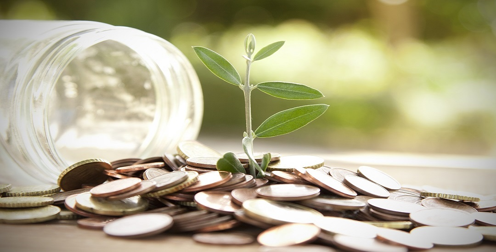
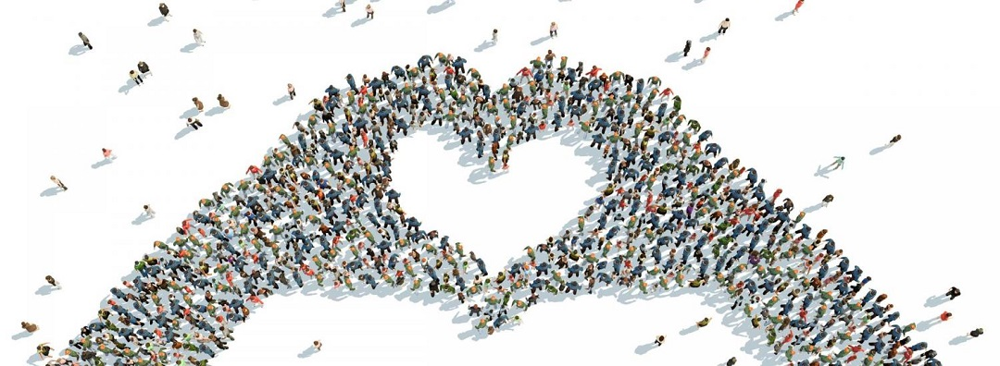

The majority of my free time is split between planning and organizing Relay for Life and volunteering and organizing drives for the homeless shelter. I started volunteering at the Hope Center Homeless Outreach Center four years ago. When I first started volunteering there, I noticed that many of the clients carried all of their personal belongings in just a plastic shopping bag. This prompted my first collection of backpacks from friends and family. Each year after, the project has grown bigger and bigger. In recent years, my backpack drive has expanded because I have emailed every principal and guidance counselor in …….. County asking for his or her school‚ support and help in collecting backpacks for their students. I have also visited schools the past two years and spoken to participating classes about homelessness and how they can help. Since I started, the schools have helped me to collect over 4,000 backpacks! Each year, I return to my first passion, and fill 300 of these backpacks with donated toiletries and distribute them to the homeless in November. In the past two years, I have expanded my project to provide these backpacks filled with school supplies to low-income students as well. This year, I worked with five schools in …… County to provide over 1,200 new and gently used backpacks filled with school supplies, to their needy and appreciative students.
With each project I complete, another project always stems off of it. At the beginning, every time that I volunteered at the homeless feedings, I would bring different requested items with me, such as sneakers in a certain size, work boots, a hat, razors, or other necessities for those who live on the streets. These small contributions led to me starting ‚ Sneakers for the Homeless where I have collected over 1,000 pairs of sneakers (about 350 each time) and donated them to the homeless shelter for the past three years. Every time that I bring sneakers, I also try to bring a bike to raffle off.
My volunteer activities have allowed the homeless and less fortunate to be less alienated from society. Through Backpacks for School Children, I have given students the resources to allow them success in school and hopefully success in life. With the homeless, backpacks allow them to walk the streets or look for a job while
maintaining a professional look and keeping their possessions safe.This year, I started including younger students in the planning and implementing stages of my projects so the projects will continue after I graduate high school.